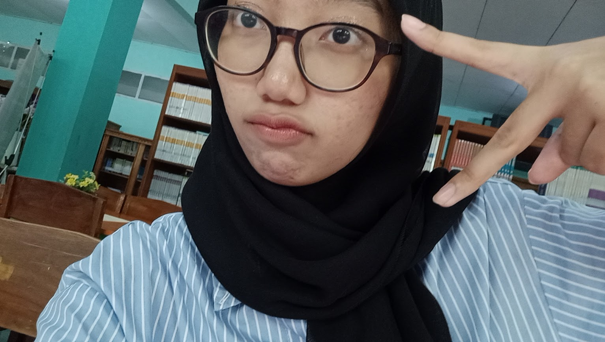

haiii!!! gimana kabar kamu?aku pengen bilang semangat aja buat kamu
kamu lagi banyak ujian yaa sekarang?semangatt yaa jangan lupa istirahatt. semoga kamu ngga terlalu suka makan pedes lagii ehee itu aja sihh !!! Proud of you yaa!!!semangatt di fk nya yaaaa....btw aku ngga pake telegraph lagi wkwkwk